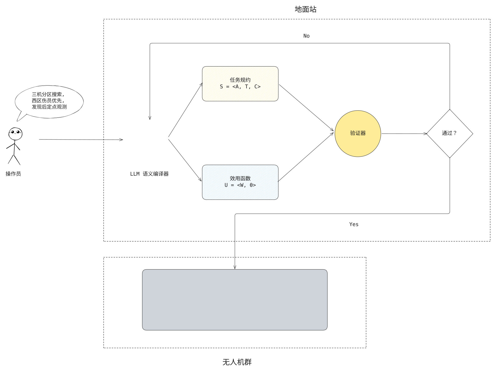

# 常规汇报 <hr> <div class="avatar-container"> <span class="avatar-name">刘标</span> <span class="avatar-date">2026-10-12</span> </div> --- ## Part 1. 方案架构 -v- ### 方案架构图 <div class="hotspot-figure figure-tall"> <p></p> <a class="hotspot" href="#/gs-spec" title="LLM 语义编译器" style="left:25.9%;top:32.0%;width:8.4%;height:16.2%"></a> <a class="hotspot" href="#/gs-spec" title="任务规约" style="left:40.4%;top:17.4%;width:16.0%;height:10.3%"></a> <a class="hotspot" href="#/gs-utility" title="效用函数" style="left:40.4%;top:44.0%;width:16.0%;height:10.3%"></a> <a class="hotspot" href="#/gs-check" title="验证器" style="left:67.2%;top:29.3%;width:9.9%;height:13.4%"></a> <a class="hotspot" href="#/gs-check-2" title="通过？" style="left:85.6%;top:29.0%;width:10.1%;height:14.0%"></a> <a class="hotspot" href="#/uav-layers" title="无人机群" style="left:28.3%;top:72.2%;width:38.0%;height:17.3%"></a> </div> --- ## Part 2. 架构 — 地面站 -v- <!-- .slide: id="gs-spec" --> ### 地面站 — 语义编译器 任务规约： $$ S = (A, T, C) $$ - $A$: 无人机集合，$A = \lbrace a_1, \dots, a_N \rbrace$ $a_i = \langle \text{类型},\ \text{初始位置},\ \text{速度},\ \text{容量},\ \text{能力集}\rangle$ - $T$: 任务集合，$T = \lbrace t_1, \dots, t_M \rbrace$ $t_j = \langle \text{类型},\ \text{位置},\ \text{截止时间},\ \text{服务时长},\ \varphi(t_j)\rangle$， $\varphi(t_j)$ 为语义属性向量（区域、优先级、地形开阔度等） - $C$: 约束集合，兼容约束、空间约束（禁飞区）、时间约束、协同约束等等 -v- <!-- .slide: id="gs-utility" --> ### 地面站 — 语义编译器 效用函数： $$ U = (w, \theta) $$ - $w$: 任务权重，$w(t_j) = 1 + \sum_k \alpha_kf_k(t_j)$，$f_k$ 来自预定义特征库，$\alpha_k \ge 0$ 例："西区伤员优先" ⇒ $w(t_j) = 1 + 2.0 \cdot \mathbb{1}[t_j \in \text{西区} \wedge t_j \text{ 为伤员}]$ - $\theta$: 宿主参数，例如 CBBA 的折扣因子、CC-OPI 的空间惩罚系数 -v- <!-- .slide: id="gs-check" --> ### 地面站 — 检验器 1. 格式检查 - 输出是合法 JSON、可解析代码； - $w$ 引用的属性都在 $T$ 中声明过，特征都来自特征库 $\mathcal{F}$ 2. 一致性检查 - 任务坐标来自候选点库； - 兼容矩阵与平台能力表一致； - 截止时间为正； - 禁飞区未覆盖全部任务； - $C$ 下至少存在一个可行分配 → 挡住幻觉任务、自相矛盾的约束 -v- <!-- .slide: id="gs-check-2" --> ### 地面站 — 检验器 3. 性质检查 - $U$ 满足模板条件：$\alpha_k \ge 0$，$\theta \in \Theta_H$（如 CBBA 要求 $\bar c_j \ge 0$、$\lambda \in (0,1)$）； - CBBA 可再随机抽样任务包做数值 DMG 核验 4. 仿真检查 - 地面仿真器用若干种子跑一遍宿主算法：是否终止、有无死锁；意图指标是否达标（"西区伤员优先" ⇒ 西区伤员确实先被服务） > 失败处理：失败原因结构化回传 LLM 重写，最多 $K_{\max}$ 轮 --- ## Part 3. 架构 — 无人机 -v- <!-- .slide: id="uav-layers" --> ### 无人机 — 协议层不动，效用层替换 **输入** 起飞前收到 $\langle S, U\rangle$，飞行中 LLM 不参与，分配完全由宿主算法在机上分布式完成 **两层模型** 分布式分配算法 = 协议层 + 效用层 - 协议层（**不动**）：任务包构建、共识、冲突消解、重分配 - 效用层（**替换**）：一条路径值多少 → 由 $U = (w, \theta)$ 给出 -v- ### 无人机层 — 效用层（以 PI 为例） PI 的结构 - 协议层：IPI / RPI 计算 → 包含、共识、移除 → 迭代直至稳定 - 效用层只有一个函数：路径代价 $\mathrm{cost}(b)$，IPI 与 RPI 都由它导出 $$ \mathrm{IPI}(t) = \min_{\text{insert pos}} \big[\mathrm{cost}(b \oplus t) - \mathrm{cost}(b)\big] $$ $$ \mathrm{RPI}(t) = \mathrm{cost}(b) - \mathrm{cost}(b \ominus t) $$ 替换前后（$A_j$：任务 $t_j$ 的到达时间，含飞行与服务） | | 路径代价 $\mathrm{cost}(b)$ | 含义 | |---|---|---| | 原 PI | $\sum_{j \in b} A_j$ | 所有任务等待时间之和 | | 接入 $U$ 后 | $\sum_{j \in b} w(t_j)\cdot A_j$ | 重要任务的等待时间按权重放大 | -v- ### 无人机层 — 效用层（以 CBBA 为例） CBBA 的结构 - 协议层：边际分数计算 → 包构建（贪心加入）、共识（竞标表 / 赢家表冲突消解）、包释放 → 迭代直至稳定 - 效用层只有一个函数：路径分数 $\mathrm{score}(p)$，边际分数由它导出 $$ \mathrm{marg}(t) = \max_{\text{insert pos}} \big[\mathrm{score}(p \oplus t) - \mathrm{score}(p)\big] $$ 替换前后（$\tau_j$：任务 $t_j$ 的到达时间；$\lambda \in (0,1)$：折扣因子） | | 路径分数 $\mathrm{score}(p)$ | 含义 | |---|---|---| | 原 CBBA | $\sum_{j \in p} \lambda^{\tau_j} \cdot \bar{c}$，$\bar{c}$ 为常数 | 越早到达得分越高，任务之间无差别 | | 接入 $U$ 后 | $\sum_{j \in p} \lambda^{\tau_j} \cdot w(t_j)$，$\lambda$ 由 $\theta$ 给 | 重要任务得分按权重放大，$\lambda$ 调"多急" |
←
讲